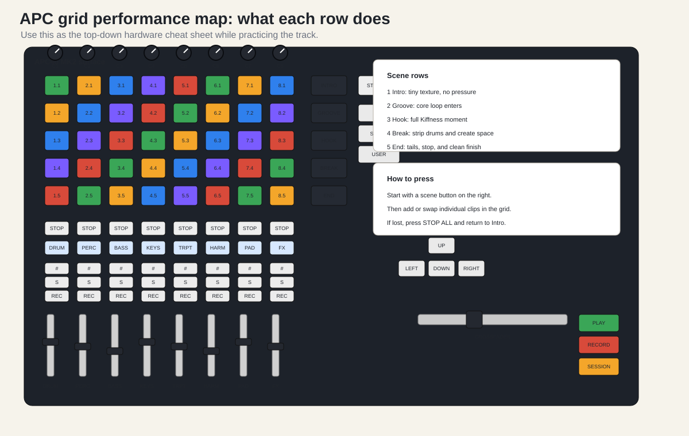

Use this exact recipe when you do not want to think.
APC Oh Long Johnson Practice 01.APC40 mkII, Input
APC40 mkII, Output APC40 mkII.1 Bar.INTRO.PADS and FX.GROOVE.DRUMS, BASS, and
PERC.HOOK.TRUMPET and HARMONY.TRUMPET and
PADS.BREAK.DRUMS.FX.HOOK.DRUMS.END.DRUMS and BASS.PADS and FX tail.